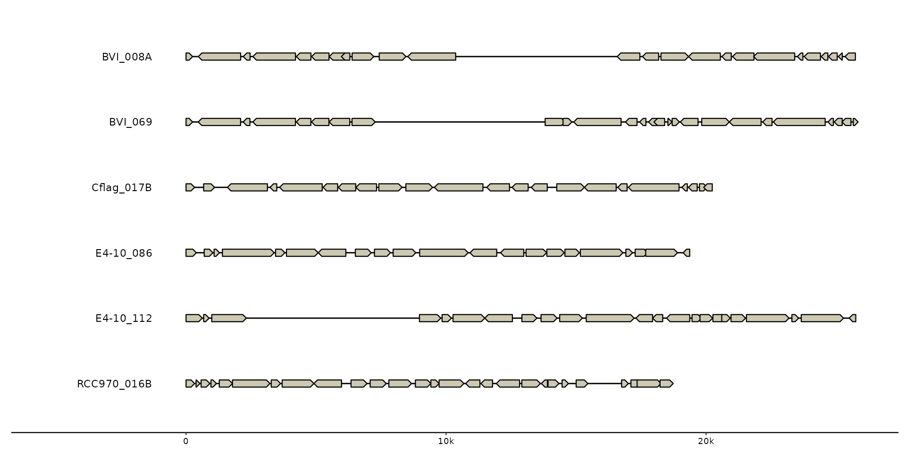
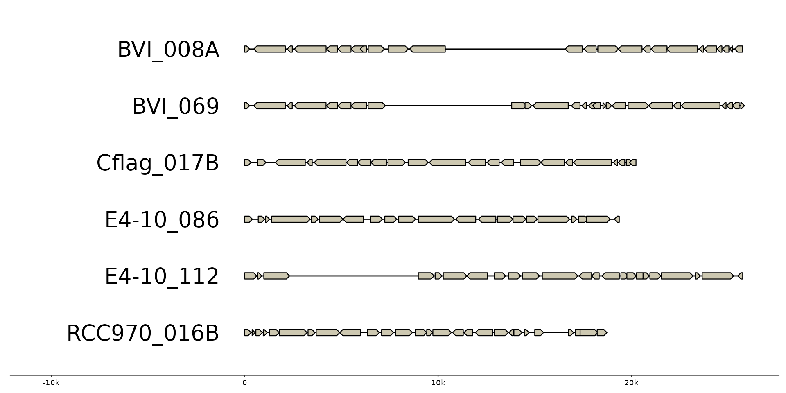
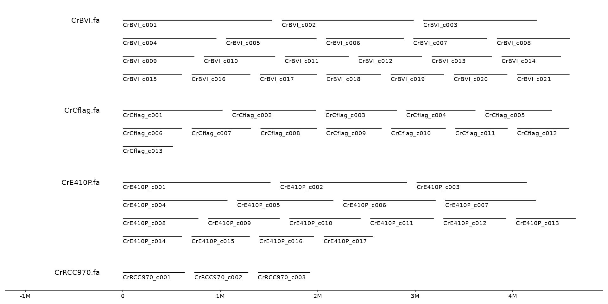
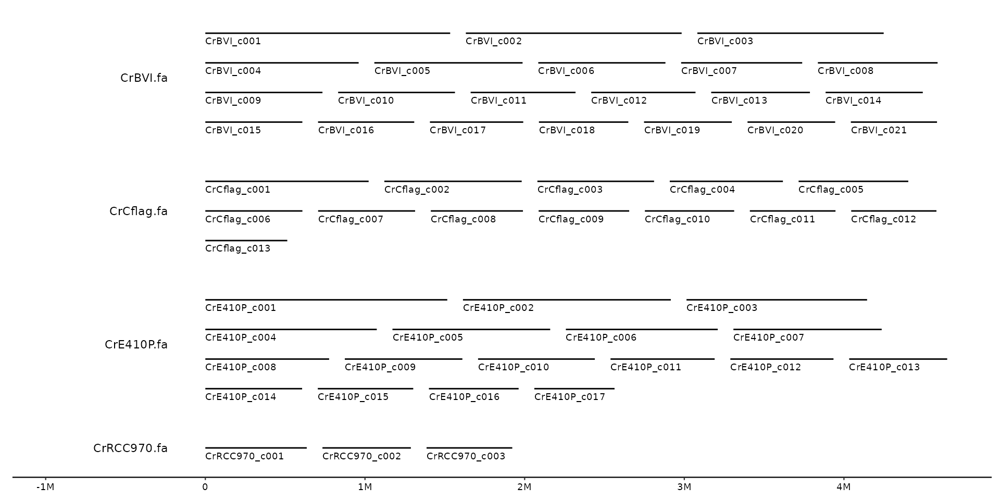
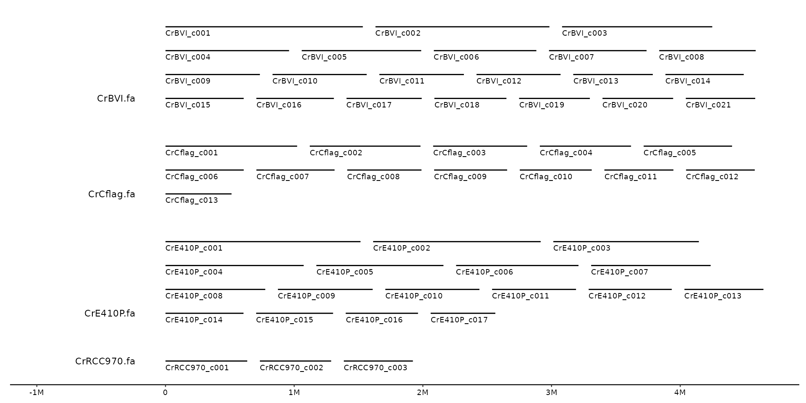

Put bin labels left of the sequences. nudge_left adds space relative to the
total bin width between the label and the seqs, by default 5%. expand_left
expands the plot to the left by 20% to make labels visible.
geom_bin_label(
mapping = NULL,
data = bins(),
hjust = 1,
size = 3,
nudge_left = 0.05,
expand_left = 0.2,
expand_x = NULL,
expand_aes = NULL,
yjust = 0,
...
)Set of aesthetic mappings created by aes(). If specified and
inherit.aes = TRUE (the default), it is combined with the default mapping
at the top level of the plot. You must supply mapping if there is no plot
mapping.
The data to be displayed in this layer. There are three options:
If NULL, the default, the data is inherited from the plot
data as specified in the call to ggplot().
A data.frame, or other object, will override the plot
data. All objects will be fortified to produce a data frame. See
fortify() for which variables will be created.
A function will be called with a single argument,
the plot data. The return value must be a data.frame, and
will be used as the layer data. A function can be created
from a formula (e.g. ~ head(.x, 10)).
by this much relative to the widest bin
by this much relative to the widest bin
expand the plot to include this absolute x value
provide custom aes mappings for the expansion (advanced)
for multiline bins set to 0.5 to center labels on bins, and 1 to align labels to the bottom.
Other arguments passed on to layer(). These are
often aesthetics, used to set an aesthetic to a fixed value, like
colour = "red" or size = 3. They may also be parameters
to the paired geom/stat.
Set x and expand_x to an absolute position to align all labels at a
specific location
s0 <- read_seqs(list.files(ex("cafeteria"), "Cr.*\\.fa", full.names = TRUE))
#> Reading 'fasta' with `read_seq_len()`:
#> * file_id: CrBVI [/home/runner/work/_temp/Library/gggenomes/extdata/cafeteria/CrBVI.fa]
#> * file_id: CrCflag [/home/runner/work/_temp/Library/gggenomes/extdata/cafeteria/CrCflag.fa]
#> * file_id: CrE410P [/home/runner/work/_temp/Library/gggenomes/extdata/cafeteria/CrE410P.fa]
#> * file_id: CrRCC970 [/home/runner/work/_temp/Library/gggenomes/extdata/cafeteria/CrRCC970.fa]
s1 <- s0 %>% filter(length>5e5)
gggenomes(emale_genes) + geom_seq() + geom_gene() +
geom_bin_label()
#> No seqs provided, inferring seqs from feats

# make larger labels and extra room on the canvas
gggenomes(emale_genes) + geom_seq() + geom_gene() +
geom_bin_label(size = 7, expand_left =.4)
#> No seqs provided, inferring seqs from feats

# align labels for wrapped bins:
# top
gggenomes(seqs=s1, infer_bin_id=file_id, wrap=5e6) +
geom_seq() + geom_bin_label() + geom_seq_label()

# center
gggenomes(seqs=s1, infer_bin_id=file_id, wrap=5e6) +
geom_seq() + geom_bin_label(yjust=.5) + geom_seq_label()

# bottom
gggenomes(seqs=s1, infer_bin_id=file_id, wrap=5e6) +
geom_seq() + geom_bin_label(yjust=1) + geom_seq_label()
